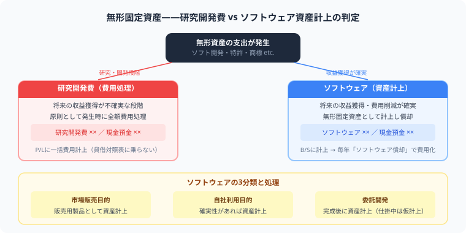

ソフトウェアは「費用で処理するのか、資産として計上するのか」で迷いやすい論点です。試験では「自社利用」「市場販売目的」の違いと、市場販売目的ソフトウェアの"製品マスター完成前後"の切り替えが特に頻出です。この記事で3分類を完全整理し、月割計算の落とし穴まで先回りします。

無形固定資産とは、形はないが長期的に役立つ資産です。建物や機械のような有形固定資産と同様に、取得原価で計上し、耐用年数にわたって償却します。
| 科目 | 内容 | 償却科目 |
|---|---|---|
| ソフトウェア | 業務で使うプログラムや販売目的の製品 | ソフトウェア償却 |
| 特許権 | 発明を独占的に使う権利 | 特許権償却 |
| 商標権 | ブランド名やマークを使う権利 | 商標権償却 |
| のれん | 企業買収時の超過取得原価 | のれん償却 |
有形固定資産の「減価償却費」とは科目名が違う点に注意。ソフトウェアの費用科目は必ず「ソフトウェア償却」を使います。
試験で最も問われるのは、この3分類の判断です。まずソフトウェアの「目的」を確認し、次に「どの段階か」で処理を決めます。
| 種類 | 会計処理の結論 | 判断の条件・タイミング |
|---|---|---|
| ① 研究開発費 （目的を問わず） |
費用処理 （研究開発費） |
発生時に全額費用。資産計上は一切不可。 |
| ② 自社利用 ソフトウェア |
資産計上 （ソフトウェア） |
将来の収益獲得 または 費用削減が確実と認められる場合に資産計上。不確実なら費用処理。 |
| ③ 市場販売目的 ソフトウェア |
製品マスター完成前 → 費用（研究開発費） 製品マスター完成後 → 資産（ソフトウェア） |
「最初の製品マスター完成」が費用／資産の切り替えライン。 |
市場販売目的のソフトウェアでは、最初の製品マスター（試作品）が完成するまでの費用はすべて「研究開発費（費用）」として処理します。製品マスターとは、量産・複製のもとになる完成品のことです。この段階では、商品として出荷できる水準に達していないため、まだ資産とは認められません。
一方、製品マスターが完成した後の機能追加・改良・バグ修正・次バージョン開発にかかった費用は、「ソフトウェア（資産）」として計上できます。将来の販売収益が見込めるためです。
市場販売目的であっても、製品マスターが完成するまでの開発費用はすべて研究開発費（費用）です。「ソフトウェアを開発している＝全額資産計上」という誤解が試験での最大の失点パターンです。製品マスター完成の前後で処理が切り替わることを、必ず問題文から読み取りましょう。
新しい製品・技術・知識を研究・開発する支出は、原則として発生時に全額「研究開発費」として費用処理します。将来の収益が不確実なため、資産計上は認められていません。
| 借方 | 金額 | 貸方 | 金額 |
|---|---|---|---|
| 研究開発費 | 500,000 | 現金預金 | 500,000 |
市場販売目的のソフトウェアでも、製品マスター完成前の開発費用はすべてこの処理になります。
社内業務システムや会計ソフトなど、自社で使う目的のソフトウェアを購入または制作した場合、将来の収益獲得・費用削減が確実と見込まれるなら「ソフトウェア（無形固定資産）」として資産計上します。
| 借方 | 金額 | 貸方 | 金額 |
|---|---|---|---|
| ソフトウェア | 800,000 | 現金預金 | 800,000 |
製品マスター完成後に行う機能追加・改良費用は「ソフトウェア（資産）」として計上します。製品マスター完成前の費用は研究開発費で処理済みのはずです。
| 借方 | 金額 | 貸方 | 金額 |
|---|---|---|---|
| ソフトウェア | 600,000 | 現金預金 | 600,000 |
資産計上したソフトウェアは、使用可能期間にわたって定額法・残存価額ゼロで償却します。費用科目は「ソフトウェア償却」であり、有形固定資産の「減価償却費」とは異なります。
耐用年数：5年以内
償却方法：定額法
残存価額：ゼロ
開始時点：使用開始日から
耐用年数：3年以内
償却方法：定額法
残存価額：ゼロ
開始時点：製品マスター完成後
| 借方 | 金額 | 貸方 | 金額 |
|---|---|---|---|
| ソフトウェア償却 | 160,000 | ソフトウェア | 160,000 |
「減価償却費」ではなく「ソフトウェア償却」。科目名の違いが試験頻出のひっかけです。
「ソフトウェアを制作したのだから全部ソフトウェアで計上する」という思い込みが最多失点パターンです。問題文に「試作段階」「製品マスター完成前」「研究・開発中」などのキーワードがあれば、その支出は研究開発費（費用）です。
有形固定資産（建物・備品）の償却費は「減価償却費」ですが、ソフトウェアは「ソフトウェア償却」という独立した科目を使います。試験では科目名が1字でも違うと不正解になります。
問題文に「将来の費用削減が見込まれる」「業務効率化に活用する」などのキーワードがあれば資産計上のサイン。「研究目的」「試作段階」「製品マスター完成前」は費用処理のサインです。問題文の読み取り精度が合否を分けます。
試験で最も多いミスは、期中にソフトウェアを取得したケースです。期首（4月1日）以外の日付で取得した場合、その期の償却額は1年分ではなく「使用月数分の月割計算」が必要です。
具体例：取得原価 800,000円・耐用年数5年・10月1日取得（決算3月31日）
問題文の「取得した日付」は必ずタイムラインでチェックしましょう。期首（4月1日）以外の取得は月割計算が必要と疑い、計算式に月数を盛り込んでください。月割を忘れると、計算プロセスごと誤りになる大減点リスクがあります。
簿記の実力は、問題を1つ解くたびに確実に積み上がっていきます。
この記事が少しでも参考になったら、この下にある【いいねボタン】をポチッと押してもらえると、めちゃくちゃ嬉しいです！ そして、Study Questで今日の学習時間を記録して、合格までの成長を「見える化」していきましょう。
ソフトウェアは無形固定資産に分類されます。有形固定資産（建物・備品）と同様に取得原価で計上し、耐用年数にわたって「ソフトウェア償却」で費用化します。費用科目が「減価償却費」ではなく「ソフトウェア償却」である点が試験頻出のひっかけです。
定額法・残存価額ゼロで償却します。耐用年数は自社利用ソフトウェアが5年以内、市場販売目的ソフトウェアが3年以内です。計算は「取得原価 ÷ 耐用年数」で求めます。期中取得の場合は「年間償却額 × 使用月数 ÷ 12」の月割計算が必要です。
研究開発費は発生時に全額費用処理します。自社利用ソフトウェアは「将来の収益獲得・費用削減が確実」と認められる場合に資産計上します。市場販売目的ソフトウェアは「製品マスター完成前」は研究開発費（費用）、「製品マスター完成後」は資産計上という使い分けが試験の最重要ポイントです。
期中取得の場合は月割計算が必要です。「取得原価 ÷ 耐用年数 × 使用月数 ÷ 12」で計算します。例えば10月1日取得（決算3月31日）なら使用月数は6ヶ月、年間償却額の半分が当期の償却額になります。問題文の取得日を必ず確認し、期首（4月1日）以外の取得は月割計算を行ってください。